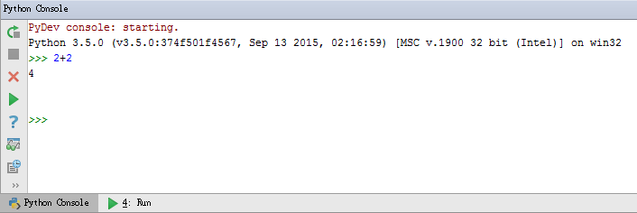
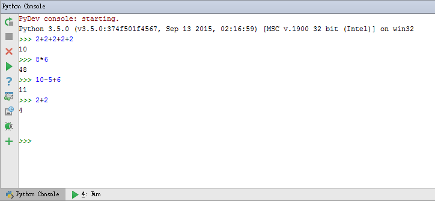
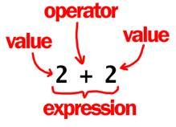
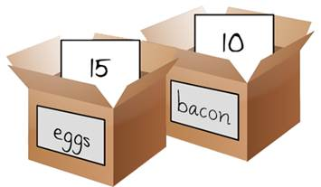

|
Lesson 1 暖身運動 |
The Interactive Shell - 試試看給電腦下指令 |
這一課我們介紹以下的主題:
· Integers and Floating Point Numbers 整數和浮點數
· Expressions 表達式
· Values 數值
· Operators 運算元
· Evaluating Expressions 計算表達式
· Storing Values in Variables 在變數裡儲存數字
在你可以做遊戲之前, 你必須要學習一些些寫程式的基礎, 還有怎麼用Python Console, 所以在這一課我們就不會寫遊戲程式, 先做點小小暖身運動吧!
在這個視窗的左下角, 你可以看到"Python Console". 點下去之後你會看到">>>"在視窗裡出現. 這個視窗就像是一個計算機, 在">>>"之後輸入 2 + 2 然後在你的鍵盤上按下 enter. 結果4會跟圖1-1顯示的一樣.

圖 1-1: 在 python console 輸入 2+2.
2+2是一個簡單的程式指令.數學符號+告訴電腦去把2和2加起來. 表 1-1列出了其他Python有的其他數學符號. -是減號, *是乘號, /是除號.
表 1-1: Python裡的一些math operators數學運算元.
|
Operator |
Operation |
|
+ |
addition加號 |
|
- |
subtraction減號 |
|
* |
multiplication乘號 |
|
/ |
division除號 |
我們也叫這些數學符號Operators 運算元, 運算元告訴Python怎麼處理運算元旁邊的數字.
Integers and Floating Point Numbers - 整數和浮點數
Integers 整數 (縮寫 int)是數字不帶有小數點,例如 4, 99, 和 0. Floating point numbers浮點數 (或是縮寫floats) 是整數帶有小數點, 例如 3.5, 42.1 和 5.0. 在Python裡, 5是一個整數, 但是5.0是一個浮點數. 這些數統稱叫做value數值.
Expressions 表達式
剛剛那些數學問題就是表達式的一個例子.電腦可以在幾秒內處理成千上萬的表達式. Expressions 表達式 是由一些運算元(數學符號)將數值(一些數字)串起來而成.試試看在Python console裡嘗試下面的數學式, 在每個式子的最後記得按下 enter.
2+2+2+2+2
8*6
10-5+6
2 + 2
在嘗試完每個式子之後, 應該會跟圖 1-2顯示的結果相同.

圖 1-2: Python Console的數學式顯示結果.

圖 1-3: 一個表達式含有數值和運算元
在 2 + 2的例子裡, Python允許在數值和運算元中放置任意數量的空格(按"空格鍵").但是要注意的是, 這個式子的第一個字元前不要放任何空格.
當電腦計算 10 + 5這個表達式, 並且得到算出的結果 15, 電腦在背後做了數字計算, 然後只在console顯示最後答案--一個數值.
這個表達式可以有任何大小, 但是最後結果永遠是一個數值. 甚至一個數值也可以是一個表達式. 舉例來說, 式子8 * 3 / 2 + 2 + 7 - 9 會在下面幾個計算步驟後會變成一個數值12.0:
8 * 3 / 2 + 2 + 7 – 9
▼
24 / 2 + 2 + 7 – 9
▼
12.0 + 2 + 7 – 9
▼
14.0 + 7 – 9
▼
21.0 – 9
▼
12.0
事實上你只會看到下面的結果:
>>> 8 * 3 / 2 + 2 + 7 - 9
12.0
要注意的是,用除號/會產生浮點數, 任何內含浮點數的表達式最終都會產出浮點數的結果.
Syntax Errors語法錯誤
如果你在Python console輸入5 + 你會得到一個error message錯誤訊息.
>>> 5 +
SyntaxError: invalid syntax
這是因為5 + 不是一個正確完整的表達式. 一個表達式內有運算元串起數值. 這裡+後面沒有數值. 所以有個錯誤訊息產生.
SyntaxError 是說 Python 不了解這個指令, 這裡是因為我們並沒有輸入正確. 就跟說外語一樣, 除了要告訴電腦要做什麼之 外, 用正確的語法告訴電腦是一樣重要的.
不必擔心電腦會因為錯誤語法而壞掉, 在 >>> 之後重新輸入一次就好了.
你可以把一個表達式的運算結果存在一個變數(variable)裡, 這樣子就可以晚 點就可以運用這個結果. 變數就像一個箱子一樣把一個數直放在裡面.
一個 assignment statement 指令 會將一個數值儲存在變數裡. 先輸入變數名稱, 後面加上等號 = (也叫做 assignment operator), 最後在後面加上要存的數值. 舉例來說, 在Python console輸入 spam = 15
>>> spam = 15
>>>
圖 1-4 說明這個變數箱子裡面放著一張卡片寫這個數值: 15. spam是這個箱子上標籤的名子. 這樣一來Python可以知道是那個箱子存這個數值.
當你按下enter後, 你不會在Python console看到任何反應. 在Python裡, 如果沒有看到任何錯誤訊息, 這代表指令已經被順利執行. >>> 提示字元 >>> 會再次出現告訴你可以輸入下個指令.
圖 1-4: 變數就像是一個箱子, 裡面可以放數值在裡面.
不像是expressions表達式, statements陳述是一種不運算的指令. 這也是為什麼沒有任何數字 出現在spam = 15指令之後. 如果你覺得搞 不清楚什麼是表達式, 什麼是陳述的話, 就記住表達式最後會算出一個數值, 剩下其他的都是陳述.
變數儲存數值, 並非表達式. 舉例來說, 看看以下的指令 spam = 10 + 5 和 spam = 10 + 7 - 2. 他們最後都是儲存一個數值15在變數spam裡.
>>> spam = 15
>>> spam
15
你可以用spam這個變數去計算: 15. 試試看在python console裡輸入:
>>> spam = 15
>>> spam + 5
20
你剛剛改變了spam裡面的數值為15, 所以 spam + 5 就像是15 + 5一樣. 下面一步一步的解釋spam + 5是如何被計算的:
spam + 5
▼
15 + 5
▼
20
如果還沒有創造出一個變數前, 這個變數是不能被使用的. Python 會輸出一個名稱錯誤訊息NameError 因為不存在叫這樣一個名稱的變數.輸入名稱錯誤也會造成這樣的錯誤:
>>> spam = 15
>>> spma
Traceback (most recent call last):
File "<pyshell#8>", line 1, in <module>
spma
NameError: name 'spma' is not defined
這個錯誤產生的原因是因為有spam這個變數但是沒有一個變數叫做 spma.
你也可以寫另一個指令去改變一個變數儲存的數值, 例如來說在Python console輸入:
>>> spam = 15
>>> spam + 5
20
>>> spam = 3
>>> spam + 5
8
當你輸入 spam + 5, 數值計算後變成 20 這是因為 15之前被存在這個變數. spam裡面了.但是當你輸入 spam = 3, 之前儲存的數值 15 已經被取代了, 或是被另一個數字給overwritten複寫過去3. 現在你輸入 spam + 5, 計算結果變成 8 這是因為 spam 裡的數值之前已經被複寫成 3了. 圖 1-5 顯示了這樣複寫的過程.
圖 1-5: 在spam裡的數值15已經被3給複寫取代.
你甚至可以利用 spam裡的數值去計算並且指派一個新的數值給spam:
>>> spam = 15
>>> spam = spam + 5
20
spam = spam + 5的意思是新的spam變數會儲存現在的值加上5. 我們可以在Python Console裡執行同一個的式子五次, 去不停增加spam的數值:
>>> spam = 15
>>> spam = spam + 5
>>> spam = spam + 5
>>> spam = spam + 5
>>> spam
30
使用不只一個變數
我們可以依我的的需要創造很多變數. 舉例來說, 我們可以給兩個變數eggs 和bacon, 不一樣的數值:
>>> bacon = 10
>>> eggs = 15
現在 bacon 變數裡存著的值是 10, eggs變數是 15 . 每個變數盒子都有自己的數值, 就像圖1-6表示的一樣.

圖 1-6: “bacon” 和 “eggs” 變數裡面存著不同的數值.
試著在Python console裡輸入 spam = bacon + eggs, 然後檢查看看 spam裡的數值是多少:
>>> bacon = 10
>>> eggs = 15
>>> spam = bacon + eggs
>>> spam
25
當你把裡面含有值10的bacon 還有裡面含有值15的eggs spam 裡的數值現在變成25. 這些變數裡面存有數值, 而不是表示式.spam 這個變數被賦予一個值25, 而不是表示式bacon + eggs. 當spam = bacon + eggs 執行完後, 改變 bacon 或是 eggs 不會影響 spam裡面存的數值.
我們玩夠數學了, 現在一起來看看用Python怎麼一起玩"文字"遊戲!
幾乎每個程式都會在螢幕上秀給使用者一些文字, 使用者用鍵盤輸入字串給電腦. 在Python裡, 一串文字被叫做strings 字串. 這些字串可以像數字跟浮點數一樣使用, 字串也被儲存在變數裡. 在程式碼裡, 字串前後會加單引號 ('). 在Python console裡面試試看下面的指令:
>>> spam = 'hello'
單引號告訴Python什麼時候字串開始跟結束, 但他們並不是字串的一部分. 如果在Python console輸入spam, 你會看到 spam 這個變數的內容 'hello':
>>> spam = 'hello'
>>> spam
'hello'
字串可以是任何鍵盤字元, 下面是幾個例子:
'hello'
'Hi there!'
'KITTENS'
'7 apples, 14 oranges, 3 lemons'
'Anything not pertaining to elephants is irrelephant.'
'A long time ago in a galaxy far, far away...'
'O*&#wY%*&OCfsdYO*&gfC%YO*&%3yc8r2'
跟數字或浮點數一樣, 我們可以把不同的字串加上運算符號去形成表示式. 把兩個字串用+ 加號串在一起叫做串連字串string concatenation. 試試看在 Python console輸入'Hello' + 'World!':
>>> 'Hello' + 'World!'
'HelloWorld!'
這個表示式最後計算出一個單一字串 'HelloWorld!'. 這個字串裡沒有空格是因為不管前面或是後面的字串都沒有空格. 下面這個例子就加了空格在字串裡:
>>> 'Hello ' + 'World!'
'Hello World!'
在數字或是字串上用加號+會有不同的效果, 這是因為他們是不同種類的值. 每個值都有一個資料型別 data type. 'Hello' 是字串, 5 是整數.Python對不同的資料型別會做出不同的運算. + 加號運算元會把字串串在一起, 但把數字相加>.
總結
我們在這第一課學會了怎麼寫一些基礎的Python指令. Python 需要你嚴謹地告訴他到要做什麼事情, 因為電腦沒有跟我們一樣的常識, 只了解一些特殊的指令.
表示式是數值(像是 2或5) 或是數值加上一些運算元 (像是 + 或 -). Python 可以計算這個式子,把這個些式子簡化成數字. 你可以儲存 這些數值在變數裡, 這樣後來其他的指令就可以使用它們.你也會學會怎麼把文字放在表示式裡, 並且怎麼把字串串在一起.
在Python裡有很多不同種類的運算元跟數值. 下一課, 你會學會如何寫你第一個程式, 也會學會其他一些基本的概念. 更有趣的是, 你會發現Python不只是一個計算機, !